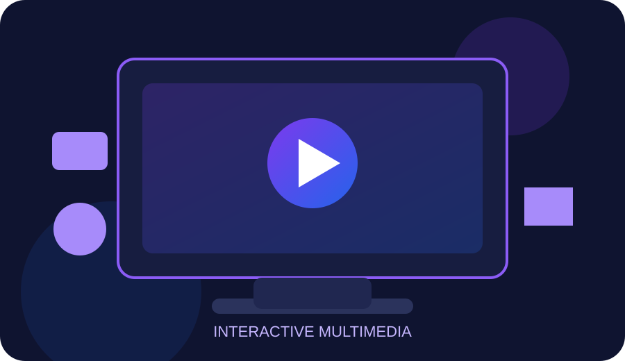
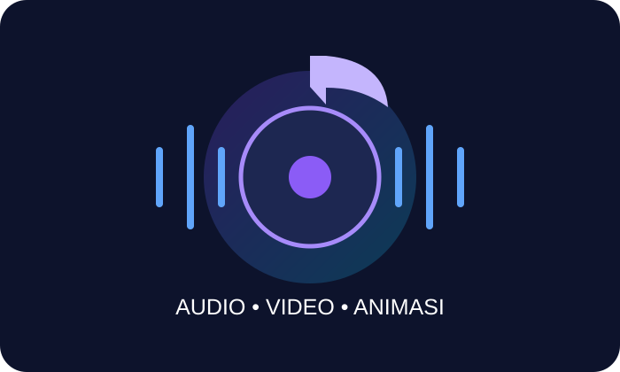

Teks
Elemen dasar untuk menyampaikan informasi, judul, instruksi, dan penjelasan.
Pelajari konsep multimedia melalui teks, gambar, audio, video, animasi, dan kuis interaktif dalam satu website.
Text • Image • Audio • Video • Animation
Pelajari dasar-dasar multimedia dengan cara yang sederhana.
Elemen dasar untuk menyampaikan informasi, judul, instruksi, dan penjelasan.
Visual yang membantu pengguna memahami informasi secara lebih cepat dan menarik.
Suara, musik, dan narasi yang dapat memperkuat pengalaman pengguna.
Gabungan visual bergerak dan audio untuk menyampaikan informasi secara dinamis.
Gerakan visual yang membuat konsep lebih hidup dan membantu menarik perhatian.
Interaksi pengguna seperti tombol, kuis, navigasi, dan feedback langsung.

Gabungan berbagai media dalam satu pengalaman belajar.
Visual membantu informasi lebih mudah dipahami.

Suara, video, dan animasi membuat pembelajaran lebih hidup.
Multimedia adalah penggunaan beberapa bentuk media seperti teks, gambar, suara, video, dan animasi secara terpadu untuk menyampaikan informasi kepada pengguna.
Pilih jawaban yang paling tepat. Nilai akan dihitung otomatis.
Tulis jawabanmu pada form berikut.
Jelaskan pengertian multimedia menurut pemahamanmu sendiri.
Sebutkan minimal 5 unsur multimedia dan jelaskan fungsinya.
Mengapa video dapat menjadi media pembelajaran yang efektif?
Gunakan video sebagai media visual dan audio untuk memperkuat pemahaman.
Video pembelajaran lokal ini menjelaskan unsur-unsur multimedia secara singkat. Karena file video disimpan di website, video tetap dapat diputar saat website di-hosting tanpa bergantung pada YouTube.
Informasi pembuat dan tujuan media pembelajaran.
NIM: 146251088
Program Studi: S1 Teknik Informatika
Website ini dibuat sebagai media pembelajaran multimedia yang menggabungkan informasi, visual, audio, video, animasi, dan interaksi pengguna.